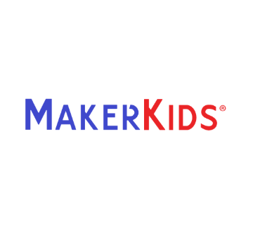
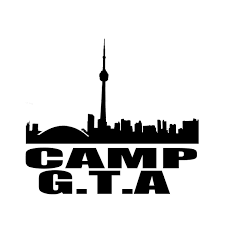

- Interdisciplinary student with 4+ years of team management, technical support and leadership experience
- Enthusiastic and purpose-driven individual, adept in working in agile environments with quick problem solving skills
- Eager to learn on the job
- Adaptable and excited to take on challenges to further develop practical knowledge and techniques
- Practiced communication skills and proven customer service experience
- Ongoing research of new technologies
- HTML
- CSS
- Javascript
- C++
- Python
- Java
- Maven
- JUnit
- MySql
- VirtualBox (virtualization)
- Git
- RISC-V
- Android app development
- Computer Hardware
- Windows OS (XP, 7, 10, 11)
- Linux
- Smart Home
- Home Assistant
- Computer Networking
- Basic Network Administration
- Microsoft Office
- Security Camera installation
- Microsoft Visual Studio Code

Bachelor’s degree in Computer Science
York University
Sept 2018 - June 2022
Customer Service representative // Transcom
July 2022 - Jan 2023 | Virtual
- Apple media services advisor: answer inbound calls relating to apps and the App store, billing issues, and account recovery issues.
- Express a sympathetic sense of urgency and demonstrate significant willingness to help
- Taught children aged 6 - 16 the core concepts of coding and robotics through the use of scratch, glitch, microbit, and simulated Ardunio through the use of tinkercad
- Children with intermediate coding skills were taught more complex programs, such as Python and C++
- Ensured an educational space that incorporated fun to keep the children engaged

Coding Instructor // MakerKids Leaside
Jan 2022 - July 2022 | Virtual
Front Desk // MakerKids Leaside
Jan 2022 - July 2022 | Virtual
- First point of contact for both internal staff members and external clients
- Provide immediate support through the phone
- Provide secondary support through ticketing system, email, and voicemail
- Escalate issues as necessary to ensure the best quality of service for the client
- Supervised a group of 20 campers and led a team of 3 volunteers as the group’s senior counselor
- Planned and participated in daily camp activities using 2+ years of prior child care experience to ensure a fun and inclusive environment
- Enforced rules and safety while addressing behavioral issues to emphasize the importance of respect and kindness using positive reinforcement

Senior Camp Counselor // Camp GTA
July 2017, July 2018 & July 2019 | Toronto, ON
test content3333333333333333333